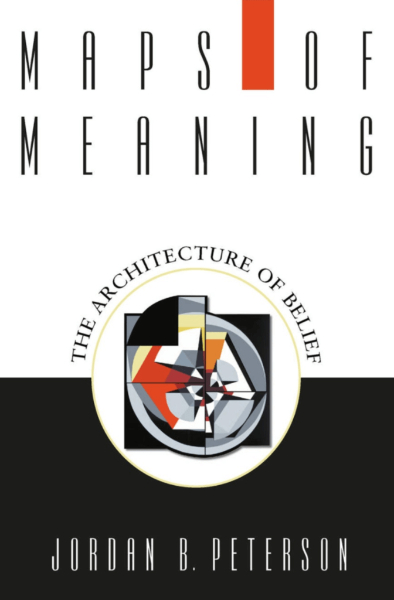
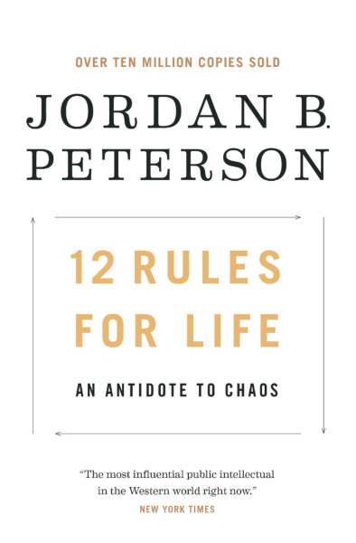
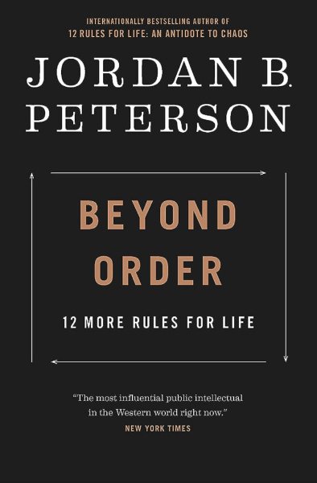

Here are some of the Books he wrote

"Compare yourself to who you were yesterday,
not to who someone else is today.”
Dr. Jordan B. Peterson is a renowned psychologist, author, and online educator. His bestselling books, including “12 Rules for Life” and “Beyond Order,” have sold millions of copies worldwide. Dr. Peterson's lectures and podcasts consistently attract large audiences, providing valuable insights into topics such as mythology, psychology, and personal development.
Born in Edmonton, Alberta, Canada
Raised in Fairview, Alberta.
Earned a Bachelor's Degree in Political Science
Studied at
the University of Alberta, later switching to psychology.
Completed PhD in Clinical Psychology at McGill University
Conducted research on alcoholism and aggression.
ssistant Professor at Harvard University
Taught psychology and studied personality traits.
Published Maps of Meaning: The Architecture of Belief
Explored the relationship between belief systems and meaning.
Gained Public Attention for Opposing Bill C-16
Criticized
Canada's legislation on gender pronouns and compelled speech.
Published 12 Rules for Life: An Antidote to Chaos
Became
an international bestseller and launched his global speaking
tour.
Resigned from the University of Toronto & Expanded Influence
Published Beyond Order: 12 More Rules for Life and joined
The Daily Wire.
Here are some of the Books he wrote